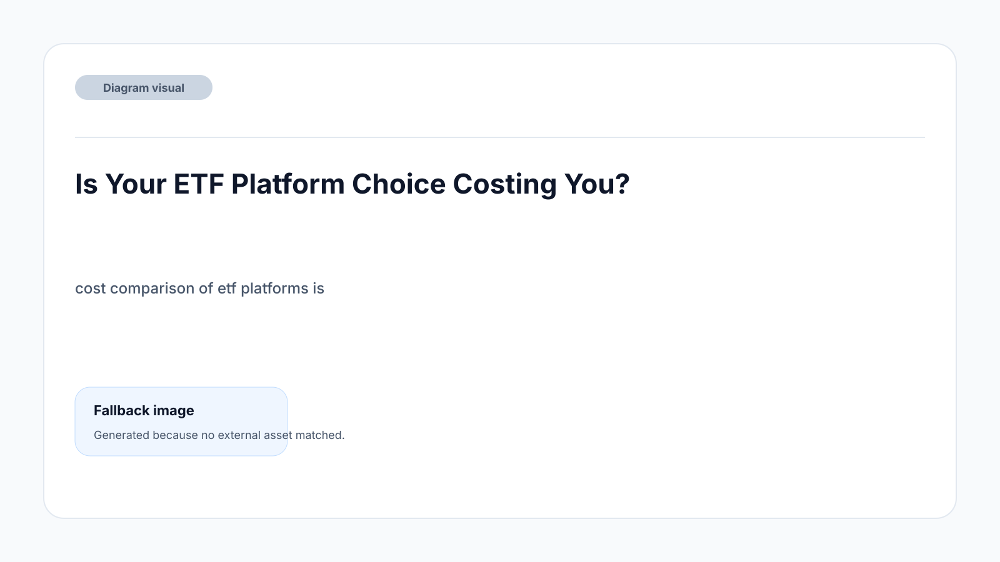
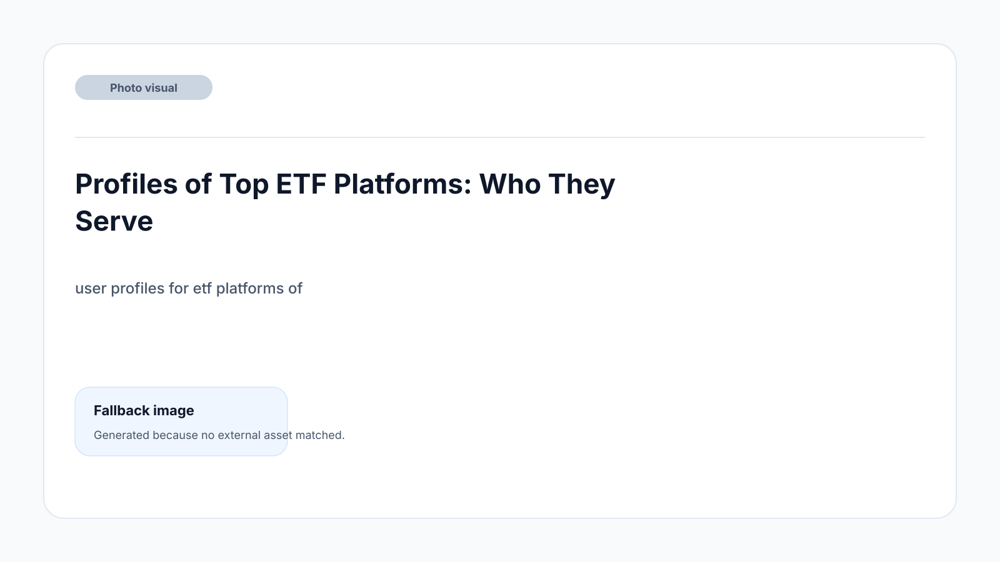
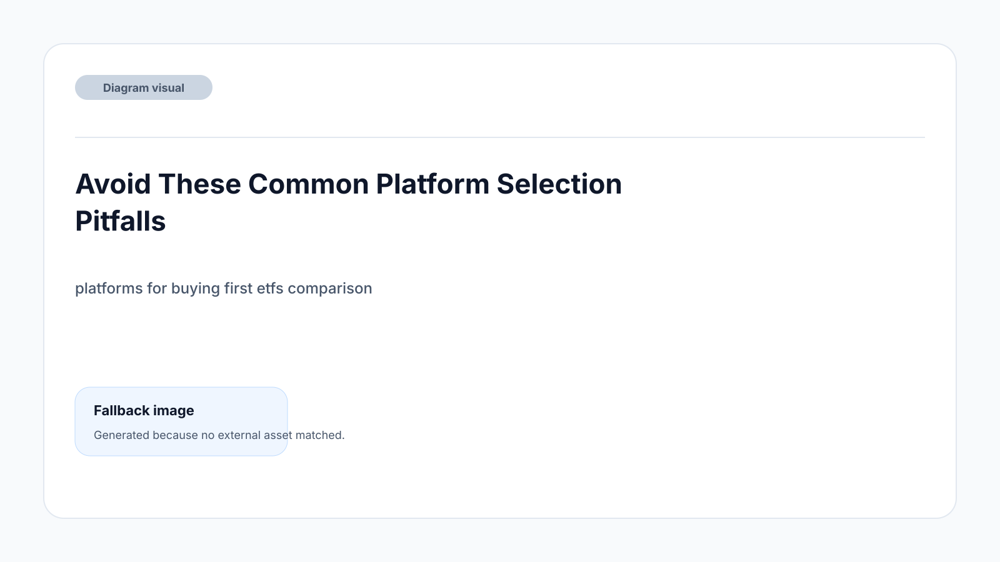
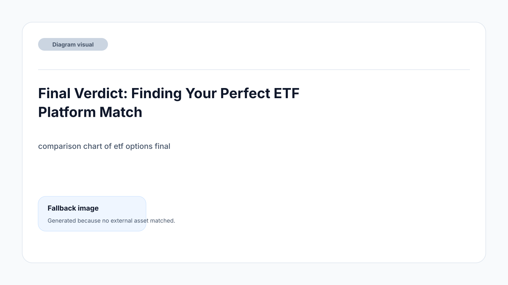

TL;DR
Robinhood wins for US beginners—zero fees, clean UI, minimal hassle. DEGIRO leads in the EU for low-cost, broad-access ETF investing (use their free ETF list with care). Interactive Brokers is unbeatable for those planning to grow, but it demands more setup effort. Don’t ignore hidden currency, spread, and inactivity fees—these add up fast on a first $500 stake.
Is Your ETF Platform Choice Costing You?

You want to buy your first ETF—maybe an S&P 500 tracker or a broad EU index—with $500. Here’s the painful truth: the wrong platform can eat $15–$50 of that in fees, even before you see your first gain.
Robinhood, DEGIRO, Interactive Brokers, and Vanguard all compete for your money, but their fee structures are riddled with traps: commission charges, currency conversion fees, and even sneaky inactivity fees for casual buyers.
Most beginners underestimate the snowball effect of these charges. Buy a US-listed ETF from the EU on the wrong broker and you could face double conversion (EUR-USD-EUR) plus a flat $5 fee—on a $500 stake, that’s a 1% loss immediately, before the market even moves. Skip platform research and you might burn a year’s growth in ten minutes.
Ignore the claims of “zero-commission” in ads: hidden costs lurk in spreads or foreign exchange markups. Make this mistake once, and you’ll spend all year just to catch up.
Profiles of Top ETF Platforms: Who They Serve

Not every ETF platform serves the same mission. Robinhood has become a US favorite for digital natives—easy UI, no commissions on US ETFs, and slick mobile-first design. But EU buyers get locked out: Robinhood isn’t even available there.
DEGIRO, in contrast, is the EU’s workhorse. It attracts first-timers, but also value-conscious investors thanks to its commission-free ETF list (with quirks). Interactive Brokers wins over globally-minded traders willing to master more complexity for super-low FX fees and deep inventory.
Vanguard targets patient, hands-off US investors with no-frills, buy-and-hold simplicity.
Who should pick what? - Robinhood: new US investors or anyone overwhelmed by traditional brokers. - DEGIRO: EU residents who want wide ETF access, a few free trades, and cheap ongoing costs. - Interactive Brokers: Beginners ready to spend 1–2 hours learning its workflow for low conversion fees—especially if future growth is likely. - Vanguard: Absolute beginners in the US who just want to buy and hold, and are investing for long horizons.
The ideal platform matches not just your region, but your personality and learning appetite.
Platform Features That Make or Break Your Investing Experience
Choosing based on cost alone is a mistake—platform quirks can create unexpected headaches. Here's where the fine print starts to separate the crowd. DEGIRO and Interactive Brokers both tout low fees, but their ETF interfaces differ sharply. DEGIRO’s free ETF list sounds appealing until you realize you must pick from their specific selection and observe quirky monthly rules, or a simple misstep triggers a fee. Robinhood wins on zero-commission for US ETFs, but FX and tax reporting tools fall short for anyone crossing US-EU borders. Vanguard’s simplicity means fewer bells and whistles—but sometimes, that’s exactly what first-time investors need.
Let’s make the differences clear. Note the recurring mention of minimums, conversions, and platform quirks that catch beginners off guard:
| Feature | Robinhood (US) | DEGIRO (EU/UK) | Interactive Brokers |
|---|---|---|---|
| Minimum Deposit | $0 | €0 (varies by country) | $0 |
| ETF Commission | $0 (US ETFs) | €0 on selected ETFs (rules apply) | $0–$2 per trade |
| Currency Conversion Fee | N/A (no FX support) | 0.25% (automatic FX) | ~0.002% (very low manual FX) |
| UI/UX Beginner Friendliness | High | Moderate | Low (steep learning curve) |
| Account Maintenance/Inactivity Fees | None | None (exceptions for some countries) | $0 (Tiered plan) |
Where you’re based and how often you’ll trade decides which “gotcha” is most likely to bite. Don’t just follow lowest fees—ease of use and transparency should weigh in, especially if you’re new.
Scenario: Investing $500 in ETFs Using Different Platforms

Let’s walk through a real scenario. You have $500 and want exposure to an S&P 500 ETF.
Step 1: On Robinhood (US), you buy $500 of VOO. There are no purchase commissions, no account fees, and no currency conversion—your total outlay is $500, and you own $500 of VOO. In a year, if you sell, the spread is minimal.
Step 2: On DEGIRO (EU, buying a US-listed ETF), €500 converted at 0.25% FX costs drops you to ~€498.75. Say you use their free ETF list—no commission—but slip up and buy outside the window, and that’s a €2 trade cost. Sell in 7 days, repeat the same conditions. Real cost of a simple error: €2–€4. If you stick within their free ETF rules, friction is near-zero.
Step 3: Interactive Brokers (EU/UK). $500, minimal FX at 0.002% if you convert manually, but expect a learning curve of 1+ hours just to execute the trade. A commission of $0–2 may apply, but it’s the lowest FX outperformer—provided you avoid rookie mistakes (like automatic FX mode at higher rates).
If you plan to add $100–$200 monthly, ongoing costs matter more: Robinhood remains free for US buyers, DEGIRO can sneak in fees if you stray off-menu or change strategy, and Interactive Brokers’ complexity only pays off if you’ll grow your investment or automate with recurring buys.
Avoid These Common Platform Selection Pitfalls

The most expensive mistake? Picking the platform your friend uses without checking if the details fit your situation. In the US, choosing a full-service broker like ETRADE or Charles Schwab for a $500 ETF buy is overkill—excessive account features, higher minimums, and complex interface all slow down first moves.
In the EU, some newbies ignore ongoing FX fees and end up paying 0.25–1% extra on every cross-border trade (that’s $25 lost for every $2,500 invested—enough to erase a month’s growth).
Another trap: running after zero-fee headlines. Some fintech apps offer zero upfront commission but pass hidden costs through ‘spread’—the difference between buying and selling prices—especially on less liquid ETFs or outside US market hours.
Also, beware of ignoring interface complexity. Interactive Brokers is powerful, but a routine action could take 10 steps for newcomers. DEGIRO’s interface is simpler, but deviating from their free ETF process by accident racks up sneaky fees.
Often, first-timers set up an account, try a test trade, and then abandon the platform when confusion or an unexpected loss erodes confidence. Avoid jumping in without studying the 3–5 biggest ETF selection errors (see our ETF beginner mistakes checklist).
Final Verdict: Finding Your Perfect ETF Platform Match
Here’s how to decide, based on your profile and the real tradeoffs:
- If you’re a total beginner in the US, start with Robinhood for zero friction. You’ll pay nothing in entry fees or maintenance, and the interface distills ETFs to their basics. - If you're just starting in the EU/UK, DEGIRO is the strongest all-rounder: lowest learning curve, low FX and commission structure, but stick to approved ETF lists and free-trade rules.
- For anyone planning to scale up to $5,000 or automate cross-border buying, Interactive Brokers is unbeatable on cost—if you’re ready to invest 1–2 hours upfront to master its interface.
- For serious, long-term US investors who want ultimate stability, Vanguard's platform does less, but often that's the best way to avoid overtrading and wasted fees.
If you’re bouncing between platforms looking for the “perfect” deal, you’ll waste precious time and possibly money. Match your ETF ambitions to your budget, platform patience, and how much friction you’re willing to accept in the first 30 days. For more advanced ETF allocation or automation ideas, check out our step-by-step ETF portfolio building guide.
FAQ
What is the best platform for beginners to buy ETFs?
For US residents, Robinhood or Vanguard stand out for beginners: zero commissions, no frills, and easy setup. For EU and UK residents, DEGIRO takes the lead due to its low cost and user-friendly structure—just stay within the free ETF list to minimize fees.
Are there hidden costs associated with ETF platforms?
Yes. Even zero-commission brokers may charge via bid/ask spreads, currency conversion fees, or limit access to certain ETFs. Always check for inactivity fees, FX conversion rates, and whether free trades apply to the ETFs you actually want.
Should I care about FX fees if I only plan to buy EU-listed ETFs?
If you are investing only in EU-listed ETFs with euros, FX fees are less of an issue—but if you ever want exposure to US markets or expand globally, understanding platform FX policies will save you surprises and extra costs.
Can I switch platforms easily if I make a mistake?
You can move, but ETF transfers between brokers are rarely free: expect administrative steps and possible exit fees. If you're below a certain portfolio value (often under $10,000), it's sometimes simpler to sell, withdraw, and repurchase—though watch for tax consequences.
This article is reviewed quarterly to ensure pricing and fee comparisons match the latest platform policies, and updates are added when notable changes occur. Every recommendation is checked for practical beginner use and tested for ease of onboarding.
Next step
Use the article as a decision point, not just reading material. Your next system matters more than more browsing.
Search more articles
Find related tools, workflows, and guides.